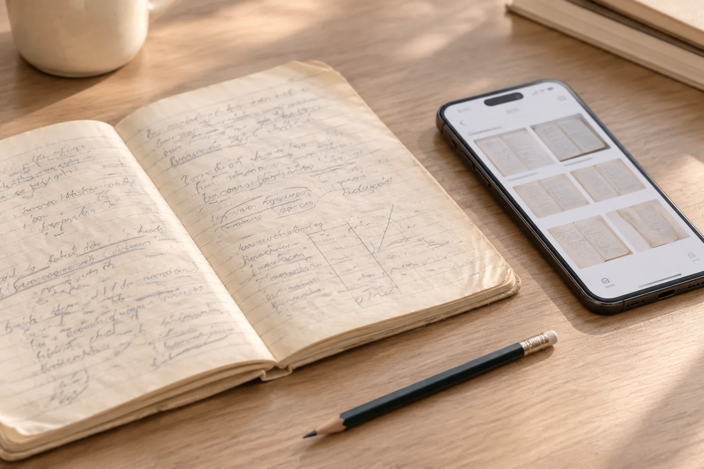

西安旧笔记只有铅笔浅字，转发前先保留相机原文件
浅色铅笔字在手机上看着还能读，经过聊天压缩后却可能断断续续。第一次拍到的文件，往往比多次转发的预览更值得保留。

浅字先看曝光和反光
西安模仿笔迹参考若是铅笔笔记，石墨反光可能让某些角度下的字显得更浅。拍摄后检查关键文字，不只看纸面是不是亮白。必要时调整光线再拍一张，但每次文件分开保存，不把不同照片拼成一个看似完整的原图。
转发副本不覆盖原件照片
聊天软件的预览图便于沟通，却可能缩小尺寸、增加压缩。保留相机原文件并标注页码，发送时说明它与预览的对应关系。字看不清就具体指出所在页行，后续可补对应局部，不必反复转发同一份越来越模糊的截图。
署名材料也要看笔具
模仿签名、模仿签字参考若使用铅笔、圆珠笔或签字笔，应尽量记录已知笔具。不能确认时写未知，不凭照片颜色猜测。不同工具的线条外观有差异，固定姓名的结构与墨线质感也应分别观察，避免把笔具影响全部归到写法变化。
保留未经增强的版本
笔迹鉴定资料若为了阅读调高对比度，另存副本并说明处理方式。浅线在转换中消失后，单纯放大未必能够恢复。原件是否仍在、照片由谁提供、哪些字尚不可辨，清楚写入目录，比给每个模糊字做一份自动修复图更实用。